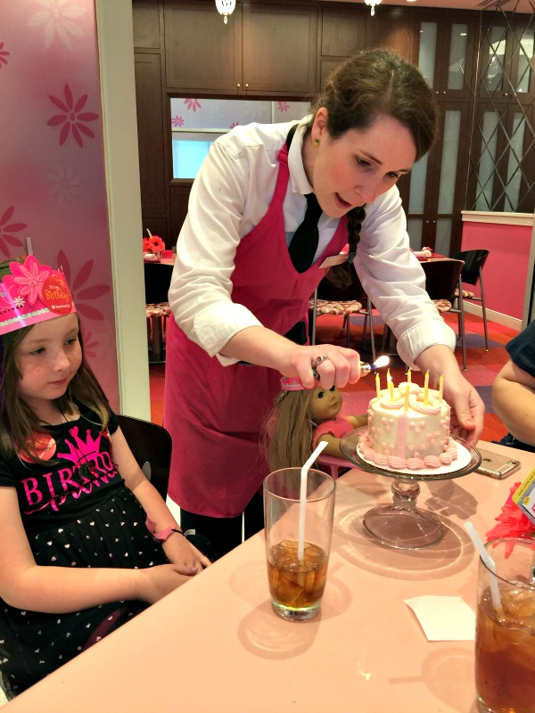
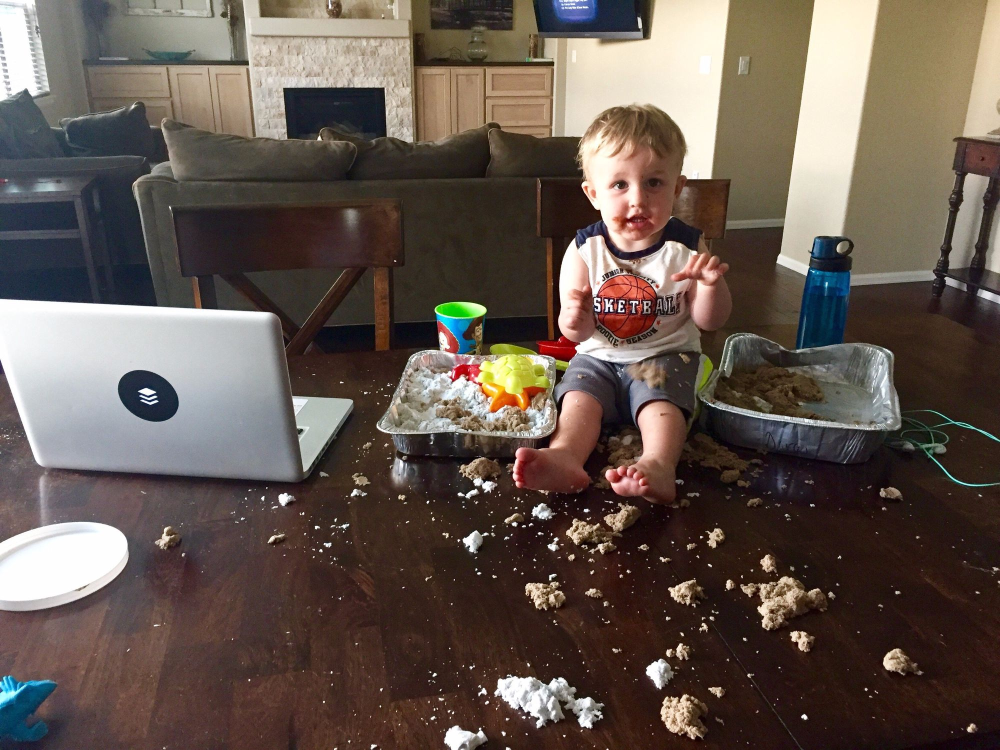
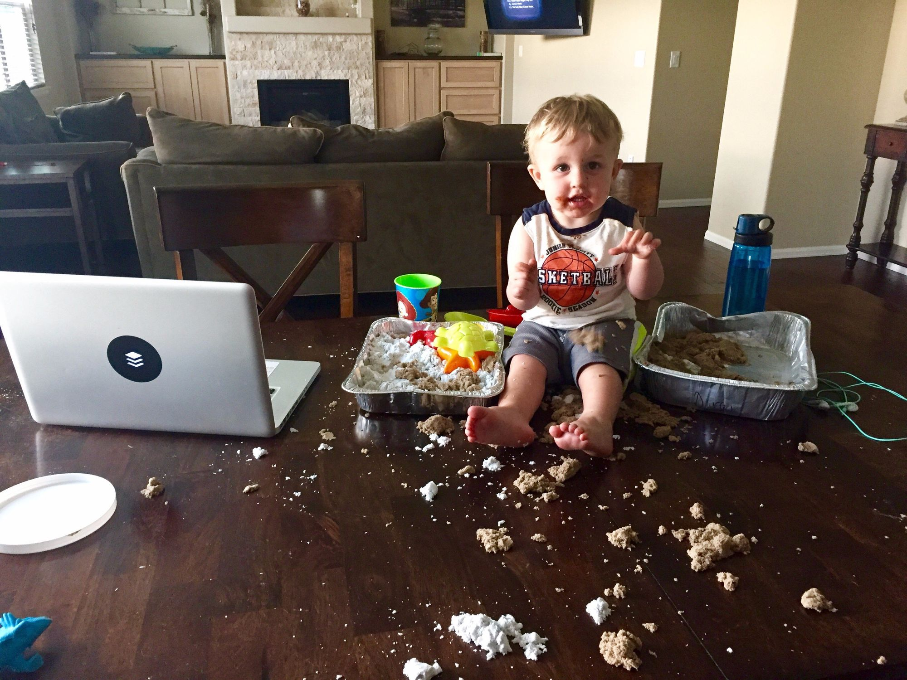
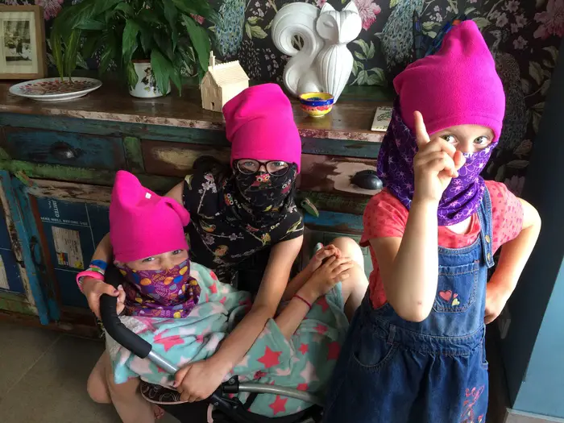
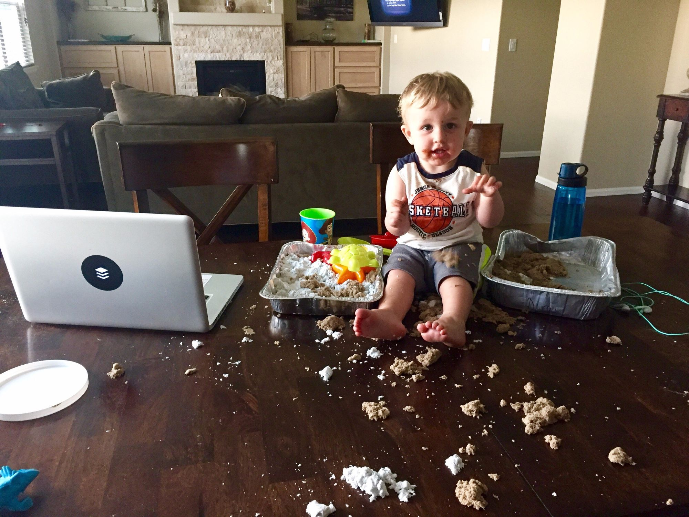
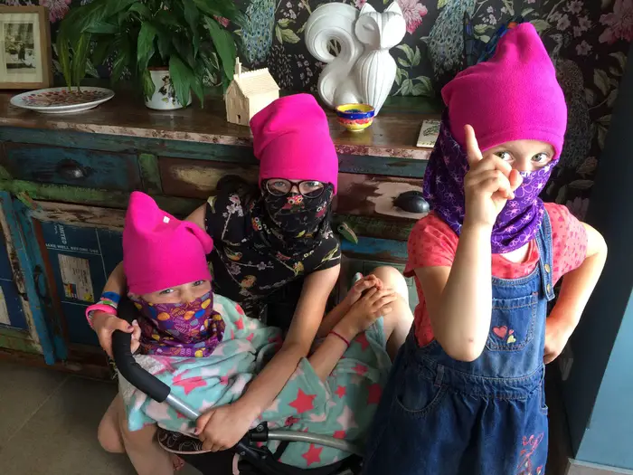

Alice Barajas
Alice Barajas is a current Senior at UCR working towards a degree in English with a minor in Law.
Alice currently works as a freelance Nanny with 8 years of paid experience helping parents raise children.
By focusing on mental health, Alice hopes to use the degree she earned at UCR to enter Law school and one day become an advocate for the vulnerable.
Experience
Nanny
• Developed a stronger sense of patience and emapthy for a highly vulnerable population.
• Experience defusing stressful situations while maintaining a level head.
• Provided and maintained a healthy environment for developing children.
Assistant Teacher
• Second in comand to the principle teacher.
• Provided daily age appropriate educational schedule
Lead Server
• Provided memorable experiences for different daily guests.
• Planned and executed party bookings.
• Entertained guests with crafts and knowlege on our products.
• Delivered meals in an efficient manner to keep guests happy.
Education
De Anza Community College
University of California Riverside
Portfolio


 


